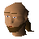

Baraek

| Config name | baraek |
| NPC id | 547 |
| Combat level | hidden |
| Options | Talk-to |
| Wander range | 2 tiles from spawn |
| Area folder | area_varrock |
| Defined in | scripts/areas/area_varrock/configs/varrock.npc |
Baraek
Animal skins are a speciality.
Show all 1 spawn on the world map → Open in knowledge graph →
Locations
| Area | Coordinates | Level | Count | Map |
|---|---|---|---|---|
| Varrock | 3218, 3435 | 0 | 1 | view |
Dialogue
PlayerCan you tell me where I can find the Phoenix Gang?
BaraekSh sh sh, not so loud! You don't want to get me in trouble!
PlayerSo DO you know where they are?
BaraekI may do.
BaraekBut I don't want to get into trouble for revealing their hideout.
BaraekOf course, if I was, say 20 gold coins richer I may happen to be more inclined to take that sort of risk...
PlayerOkay. Have 20 gold coins.
PlayerUh....oops. My mistake. I don't have 20 coins. Silly me.
BaraekOk, to get to the gang hideout, enter Varrock through the south gate. Then, if you take the first turning east, somewhere along there is an alleyway to the south. The door at the end of there is the entrance to the Phoenix
BaraekGang. They're operating there under the name of the VTAM Corporation. Be careful. The Phoenixes ain't the types to be messed about.
PlayerThanks!
PlayerNo. I don't like things like bribery.
BaraekHeh. If you wanna deal with the Phoenix Gang they're involved in much worse than a bit of bribery.
PlayerYes. I'd like to be 20 gold coins richer too.
PlayerCan you sell me some furs?
BaraekYeah, sure. They're 20 gold coins each.
PlayerYeah, OK, here you go.
PlayerOh dear, I don't have enough money!
BaraekWell, my best price is 18 coins.
PlayerOK, here you go.
PlayerOh dear, I don't have that either.
BaraekWell, I can't go any cheaper than that mate. I have a family to feed.
PlayerNo thanks, I'll leave it.
BaraekIt's your loss mate.
Player20 gold coins? That's an outrage!
BaraekWell, I can't go any cheaper than that mate. I have a family to feed.
PlayerHello! I am in search of a quest.
BaraekSorry kiddo, I'm a fur trader not a damsel in distress.
PlayerWould you like to buy my grey wolf fur?
BaraekGREY WOLF FUR??? NOW you're talking!
BaraekGrey wolf fur is something of a desirable item to me.
BaraekI'll take all you have for 120 gold pieces per fur, does that sound fair?
PlayerYep, sounds fine.
PlayerThanks!
PlayerNo! I almost got my throat torn out by a wolf to get this!
PlayerWould you like to buy my fur?
BaraekLet's have a look at it.
BaraekIt's not in the best condition. I guess I could give you 12 coins for each one.
PlayerYeah, that'll do.
PlayerThanks!
PlayerI think I'll keep hold of it actually!
BaraekOh ok. Didn't want it anyway!
Referenced in scripts
scripts/areas/area_varrock/scripts/baraek.rs2